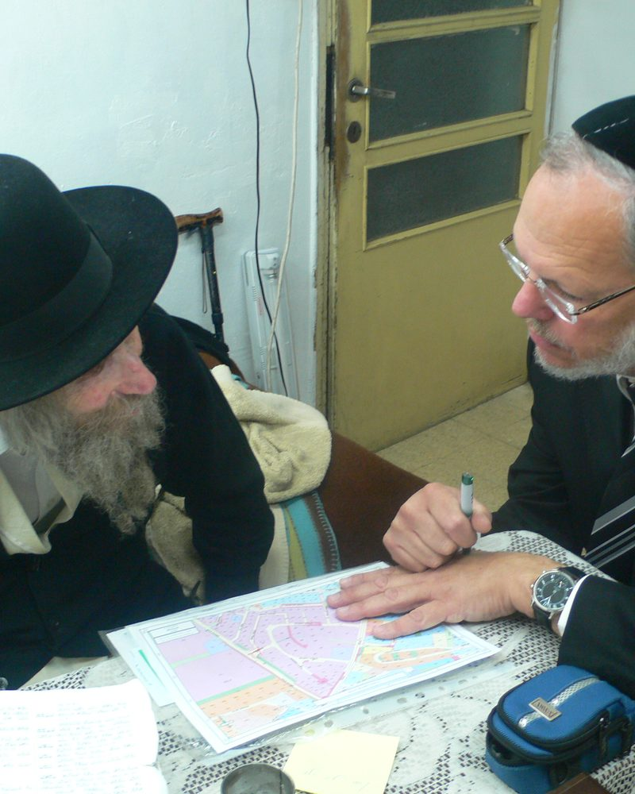
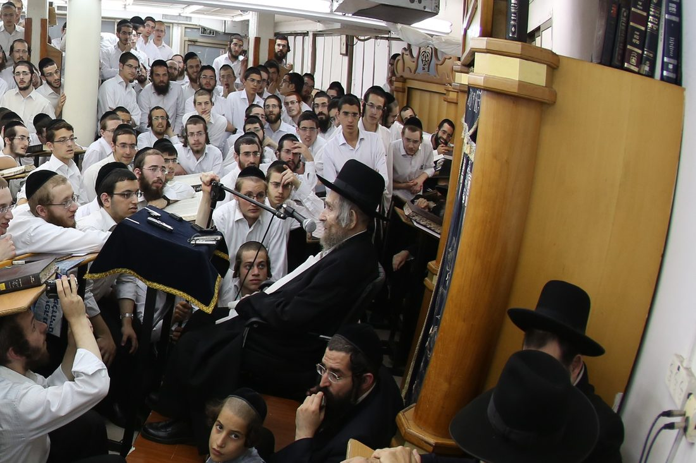
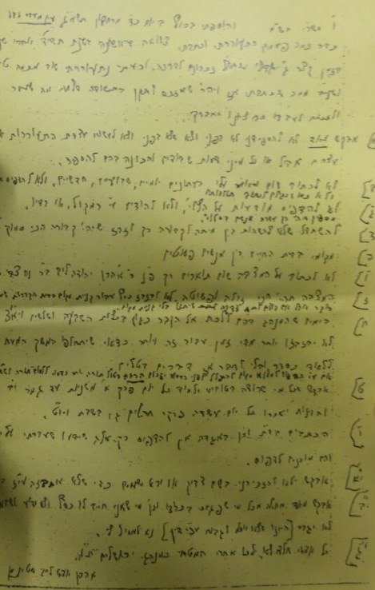

Maran Harav Steinman zt"l
תרע״ה-תשע״ח. One hundred and three years of Torah: from the alleys of Brisk, through the war years in Switzerland, to the building of the Torah world in Eretz Yisroel.
Scroll, swipe or use the arrows to follow his life.


Born in Kamenetz, a Son of Brisk
On 14 Cheshvan, in the midst of the First World War, Aharon Yehuda Leib was born to Reb Noach Tzvi and Mrs. Gittel Feiga. His parents lived in Brisk, and had fled to her parents in Kamenetz because Brisk was close to the front.
His father was a melamed and the shamash of a shul in Brisk, and the family lived next door to the Rav of the city, Rebbi Yitzchak Zev HaLevi Soloveitchik.


The Boy from Brisk, in Yeshivas Toras Chesed
He became known as an illui, and at 11 or 12 he was already accepted to Yeshivas Toras Chesed in Brisk, younger than was usual. He was close to the Rosh Yeshiva, Harav Moshe Sokolovsky, and to the Mashgiach, Harav Avraham Yaakov Gordon.
He later named his eldest son after his rebbi. He remembered this yeshiva all his days, and Yeshivas Toras Chesed in Elad carries its name today.


In Search of a Rebbi
At 16 he went to learn under Harav Pesach Pruskin in Kobrin, until the yeshiva there closed. In Shevat תרצ״ב he moved to the Kletzk yeshiva of Harav Aharon Kotler, and in Tammuz returned to Toras Chesed, then led by Harav Yisroel Chaim Kaplan.
In those years he learned b'chavrusa with the sons of the Brisker Rav and was tested by their father, and he received semichah from Harav Simcha Zelig Riger.


The Morning Dawned, to Switzerland
A draft notice to the Polish army led him to leave. In the summer of תרצ״ז he received a visa to learn in Yeshivas Eitz Chaim in Montreux, led by Harav Yerachmiel Eliyahu Botchko, with letters of recommendation from the Brisker Rav and Harav Baruch Ber Leibowitz.
Before leaving, he and his friends performed the Goral HaGra, and the pasuk that came up was "The morning dawned, and the men were sent off." In Sivan תרצ״ז he reached Montreux, where he served as a maggid shiur while still in his twenties.


Torah in the War Years
During the Second World War he was taken, as a Polish citizen, to a labor camp near Basel and forced to pave a road. Harav Moshe Soloveitchik, who led the refugees in the camp, did part of the work in his place.
After his release, talmidim gathered around him in Lucerne. In Teves תש״ד he married Mrs. Tamar Kornfeld, at a modest wedding of about 15 guests, and the couple lived in Lugano.


To Eretz Yisroel
In the summer of תש״ה he came to Eretz Yisroel by way of Spain, on the ship "Plus Ultra" which reached Haifa port on 8 Tammuz, and settled in Petach Tikva. His writings, sent after him, were lost on the way.
He learned in a beis medrash in Petach Tikva, b'chavrusa with Harav Chaim Shaul Karelitz.


Rosh Yeshiva in Kfar Saba
On the recommendation of the Chazon Ish he was appointed Rosh Yeshiva of Yeshivas Chofetz Chaim in Kfar Saba. In the summer of תשי״ב a yeshiva gedolah named for Rebbi Chaim Ozer Grodzinski opened there, and he stood at its head.
Here began a life's work of harbotzas Torah that would continue for some eighty years.


Bnei Brak, Yeshivas Ponevezh
In Elul תשט״ו Harav Kahaneman appointed him Rosh Yeshiva of Ponevezh L'Tzeirim, and in תשכ״ה also Rosh Kollel of Kollel Ponevezh, and he held both positions.
From here he strengthened the world of kollelim: he initiated and helped build networks of thousands of avreichim, even far from the established chareidi centers.


Yeshivas Gaon Yaakov
In תשל״ח he established Yeshivas Gaon Yaakov and stood at its head, and years later placed its leadership in the hands of his son-in-law, Harav Zev Berlin.
Over the years he wrote some thirty seforim, foremost among them the "Ayeles HaShachar" series on Shas and Chumash. His life in a small, simple apartment in Bnei Brak bore witness to all he taught.


The Founding of Orchos Torah
In Sivan תשנ״ח he founded Yeshivas Orchos Torah in Bnei Brak, and said a shiur klali there every week as well as sichos mussar. Around it grew the affiliated yeshivos, of which he too held the title Rosh Yeshiva.
Today over 3,000 bochurim learn in the network, in batei medrash from the Galil to the Negev.



Leading the Klal
In תשמ״ט Harav Shach invited him to serve on the Moetzes Gedolei HaTorah of Degel HaTorah. After Harav Shach's petirah he stood beside Harav Elyashiv in leading the klal, and later carried the yoke of leadership.
Until his last years he received people in his home every day for advice and brachah, and guided roshei yeshiva and mechanchim.


Journeys to Strengthen Torah
In his old age he set out again and again to the communities of Klal Yisroel: the United States and Canada, France, Britain and Switzerland, Mexico, Brazil, Argentina and more.
Everywhere he encouraged parents to send their sons to talmud torah, visited yeshivos, and raised support for lomdei Torah and mosdos chinuch.


His Petirah
Maran was niftar on 24 Kislev תשע״ח, at the age of 103. In his tzava'ah he asked for a swift burial, without hespedim or titles, and a simple matzeivah, and that those wishing to act for his merit learn Mishnayos and say Tehillim.



And the Derech Continues
At the gathering during the shivah, the founding of "Kiryas Ayeles HaShachar" was announced on the campus of Yeshivas Orchos Torah, named for his seforim. The network he founded continues in his derech: hasmadah and knowledge of all of Torah, yiras Shamayim and middos tovos.